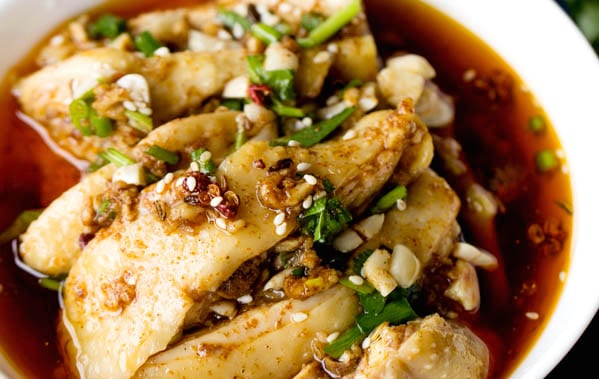

Mouthwatering Sichuan Chicken

Description
A bowl of sliced white chicken in red Si Chuan styled mala flavour sauce. The succulent skin is tender and delicious.
This dish is a delight among spicy chicken lovers, typically sold by food stall selling Si Chuan cuisine.
Ingredients
- For the Chicken
- 1 chicken , around 2 pound
- 4 ginger slices
- 2 green onions
- 1 tablespoon cooking wine
- Peanuts , toasted and crushed
- White sesame seeds , toasted
- For the Chilli Oil
- 2 slices of ginger
- 2 star anise
- 1 teaspoon cumin
- 2 bay leaves
- 2 tablespoons chili flakes
- 1.5 teaspoon Sichuan peppercorn , or powder
- 1.5 teaspoon Chinese five spice powder
- 1 tablespoon sesame seeds
- For the Sauce
- 4-6 tablespoons Szechuan style chili oil
- 2 tablespoons black vinegar
- 1 tablespoon sesame oil
- 2 tablespoon cooking wine
- ½ teaspoon sugar
- pinch of salt
- 1 tablespoon light soy sauce
- 2 garlic cloves , smashed
- ½ tablespoon minced green onion
- Minced coriander
Steps
- For the Szechuan combined chili oil:
- In a small bowl, mix chili powder, Sichuan peppercorn, five spice powder and sesame seeds.
- In a pan, add bay leaves, cumin, ginger slices and star anise, pour in around 1 cup of oil and heat until hot over slowest fire (if the spices are overheated, they become bitter). Discard all the spices and leave the oil only.
- Pour the hot oil directly to the powder mixture in the small bowl. You will smell the strong aroma during the process. Set the Szechuan combined chili oil aside. I highly recommend you making the chili oil in the previous day so there are sometime for the spices mix together. Or if you do not have pepper flakes, check this post introducing how to make chili oil from whole chili peppers.
- For the Chicken:
- Clean the chicken and remove feet and head. In a large pot, add chicken, green onion and 3-4 slices of ginger and cooking wine. Then pour enough water to cover the chicken. Bring the content to a boiling with medium fire and continue cooking for around 8 minutes (see note 1 for the adjusting of the time needed). Turn off the fire, cover the lid and let the chicken stay for around 20 minutes.
- In a large bowl, prepare enough iced water. Transfer the chicken out and soak it with iced water. Turn over several times during the process until the chicken is completely cooled down. Cut into chunks and lay in the serving bowl.
- Mix around 4 to 6 tablespoons of chili oil with other ingredients to prepare the sauce.
- Toast peanuts and white sesame in pan until aroma and then crush with a rolling pin or crusher.
- Pour the sauce over the chicken, garnish with toasted peanuts and white sesame seeds and enjoy!
- Notes:
- For larger chicken, lengthen the poach time but no longer than 15 minutes.
Recipe ingredients & steps credits to China Sichuan Food
Photo credits to Spice N' Pans